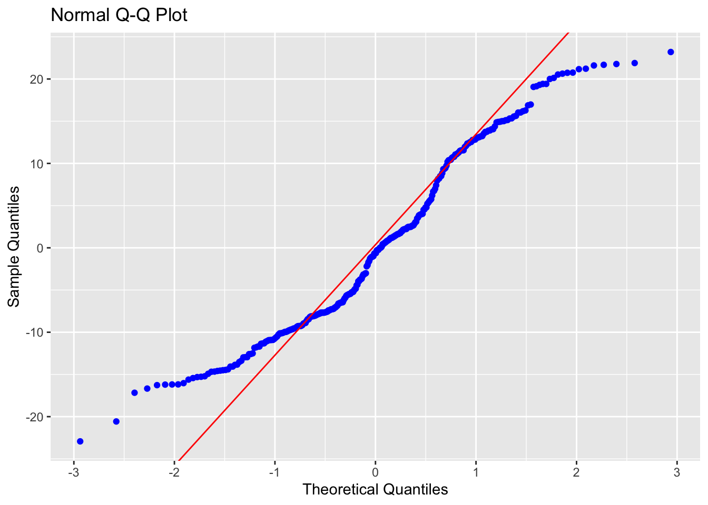

| Grade | % Mark | Rubric |
|---|---|---|
| A* | 98-100 | Exceptional. Not only was it near perfect, but the graders learned something. THIS IS HARD TO GET. |
| NA | 96+ | You went above and beyond |
| A | 94+: | Everything asked for with high quality. Class example |
| A- | 90+ | The odd minor mistake, All code done but not written up in full sentences etc. A little less care |
| B+ | 87+ | More minor mistakes. Things like missing units, getting the odd question wrong, no workings shown |
| B | 84+ | Solid work but the odd larger mistake or missing answer. Completely misinterpreted something, that type of thing |
| B- | 80+ | Starting to miss entire/questions sections, or multiple larger mistakes. Still a solid attempt. |
| C+ | 77+ | You made a good effort and did some things well, but there were a lot of problems. (e.g. you wrote up the text well, but messed up the code) |
| C | 70+ | It’s clear you tried and learned something. Just attending labs will get you this much as we can help you get to this stage |
| D | 60+ | You attempt the lab and submit something. Not clear you put in much effort or you had real issues |
| F | 0+ | Didn’t submit, or incredibly limited attempt. |
4. Final Project Report
In this page there is:
About the report
What to submit/format
What content to include
The grading rubric/checklist
The final dataset, useful code and things we have learned this semester
1. About
CANVAS PAGE HERE: https://psu.instructure.com/courses/2243429/assignments/15012915
Congratulations! You made it to the end of the semester. Thanks for being awesome
Over the last few weeks, we have been working on analyzing and modelling the temperature data. Your job is now to put it all together using the code we have used.
You can EITHER
Work in groups, where you clearly show what each team member contributes. In this case,I expect at least one or two models by each group member and a comparison of their pros and cons.
or individually (attributing any early work created by another team member)
This is worth 50 points. I am grading you on the thoughtfulness and quality of your analysis.There is no “right” answer.
2. What to submit, report format
A .Rmd and a .html file containing your report
To get an A grade, I expect professional formatting, tables of contents, templates, extraneous “welcome” text removed from package loading using code chunk options. Use the templates from previous labs/reports!
3. Content to include
Remember you can use text/figures/analysis from throughout the semester and from all the project discussion boards.
- A introduction about the climate of State College (esp the temperature) - remember Weather Spark!
- To clearly state the aim of the project, which is to predict the coldest location in State College TOWNSHIP, given the calibration data which was placed over the entire area.
- To talk about what might cause temperature differences, using your causal flowcharts.
- To clearly state the object of analysis of the calibration data, and the predictor variables, along with any quality control and data wrangling we have done (it’s OK to talk more generally about the Quality Control rather than every specific sensor removed etc). Remember units! All described with sources here - https://psu-spatial.github.io/Stat462-2023/in_S462_Project03InitialEDA.html
- To create a series of models, check their validity (LINE), discuss the goodness of fit and describe your favorite. Useful code below.
- To decide on your final object of analysis, response variable and predictors, then use that model to predict the location of the coldest temperature on Monday 1st May. Remember you can use the forecast temperature for the future airport temperature! If you can’t make a complex model work for prediction, tell me and then choose an easier one
- For 10 bonus points, to collect a temp sensor from me in Walker 201 in office hours tomorrow, or in Friday’s lecture. Then put it out in your predicted location, recording the Lat/Long and taking some photos & filling in the google form, then bringing back the sensor by the exam. We will see who is correct!
This is not part of the main report & you do not have to talk about the results as it will take me a week to find out the results.
4. Grading Rubric/checklist
See the table below for what this means - 100% is hard to get!
The text below shows what I would expect from such a report.
HTML/RMD FILE SUBMISSION - 5 marks
FORMAT/PROFESSIONAL REPORT - 10 MARKS
Full marks for a report that I would take into a job interview. You lose marks for each thing that makes it look non-professional.
I AM NOT GRADING GRAMMAR ETC. I know some people speak English as a second language. This is not a writing class.
You have done things like fully labeled plots, used mathematical equation formats, sub-headings, used spell check, a theme and as relevant things like tables of contents. You have used photos/pictures as appropriate. You included units and used code chunk options to hide any spurious code output.
In the text, you have written full paragraphs/sentences, explained results in clear language ON THE TOPIC OF TEMPERATURE (e.g.. beyond “reject H0” you have described what this means)
GRAPHICS - 5 MARKS
- You have included maps, summary statistics and scatterplots as appropriate. Your plots look great with professional axes labels and colors. You have tried more sophisticated plots than just the basics (remember ggstatplot!),
INTRODUCTION/DESCRIPTION/QUALITY CONTROL - 10 MARKS.
- You have thoughtfully described the problem, correctly identifying the object/variables AND units! You have explored the causal chain & quality control and it’s clear why you’re choosing your final models.
MODELLING - 10 MARKS
- You created your model correctly and explained why you chose them. In your write up you have summarised the model equation (including the coefficients as numbers) & summarising units afterwards. You have produced a model summary, assessed LINE/outliers and answered all questions as appropriate. It is likely that you used some sort of model selection tool such as Best SubSets.
PREDICTION - 10 MARKS
You have decided on your final model, explained why, checked its validity and used the output map to decide where to put your sensor.
Note, the final prediction is a grid cell! So you should also describe where inside your chosen grid square you will place your sensor (e.g. not in the middle of the I80 or a private house…)
[50 marks total]
Within each section above, I am using this “sub-rubric”
5. Data and useful code
A. Set-up
1st, I strongly suggest using a theme and using an R project. See the earlier tutorials for more.
Also a code chunk at the top, where you can put “include=FALSE” in the code chunk options to hide it. This will remove spurious messages. More info here if you don’t know what I mean: https://rmarkdown.rstudio.com/lesson-3.html
## Global options
rm(list=ls())
knitr::opts_chunk$set(cache = TRUE,message=FALSE,warning=FALSE)These libraries might be useful.
# Load libraries
library("tidyverse") # Lots of data processing commands
library("knitr") # Helps make good output files
library("ggplot2") # Output plots
library("rmarkdown") # Helps make good output files
library("lattice") # Makes nice plots
library("RColorBrewer") # Makes nice color-scales
library("skimr") # Summary statistics
library("Stat2Data") # Regression specific commands
library("corrplot") # correlation plots
library("GGally") # correlation plots
library("ggpubr") # QQplots
library("olsrr") # Regression specific commands
library("plotly") # Interactive plots
library("readxl") # Read from excel files
library("equatiomatic") # extract equations
library("ggstatsplot") # Make nice plots
library("visreg") #visualise regression outputs
library("MASS") # Studentised residuals
library("terra") # Spatial
library("sf") # Spatial
library("sp") # Spatial
library("tmap") # Spatial
library("raster") # Spatial
library("kableExtra") # if you want to make fancy tablesB. Final Calibration Dataset
Put the data into your project library. If I update the dataset, I will update exactly with the same filenames so you can overwrite
C. Reading in the data
Here is how I read in the calibration and prediction data
I f you wish to understand the map projection part and why the location is X and Y in metres rather than Long/Lat, see this tutorial. You can read more about the specific projection I chose here, https://epsg.io/32617 (it’s UTM).
NOTE - MY UPDATES WILL BE TO PUT IN A FIELD FOR DISTANCE TO ROAD.
# Read in the data
PredictionData <- rast("PredictionRaster.tif")
# Set the map projection.
crs(PredictionData) <- "EPSG:32617"
# Rename so it exactly matches the model.
names(PredictionData) <- c("Elevation","Slope","Roughness",
"Aspect","LandCover_Code",
"NCLD_Percent_Tree_Cover",
"NCLD_Percent_Concrete" )
PredictionData$TownshipName <- "State College"
# YOU CAN CHANGE THESE TO THE FORECAST ON MAY-1 AT THE AIRPORT
PredictionData$AirportTemp <- NA
PredictionData$AirportPressure <- NA
PredictionData$AirportWind <- NA
# And the training data
df.Predict <- read_excel("df.Predict.xlsx")
df.Predict$TownshipName <- "State College"
df.Predict$TownshipName <- as.factor(df.Predict$TownshipName)
# YOU CAN CHANGE THESE TO THE FORECAST ON MAY-1 AT THE AIRPORT
df.Predict$AirportTemp <- NA
df.Predict$AirportPressure <- NA
df.Predict$AirportWind <- NA
# And the training Data
TrainingData <- read_excel("FinalMidnightData.xlsx")
TrainingData$TownshipName <- as.factor(TrainingData$TownshipName)
# makes spatial versions
TrainingBorder <- st_read("TrainingArea.shp",crs=crs(PredictionData))
predictBorder <- st_read("PredictionBorder.shp",crs=crs(PredictionData))D. Making static plots
See this - https://psu-spatial.github.io/Stat462-2023/in_S462_Tutorial08Plots.html, menu on the right
E. Making maps
There are many ways to make maps using T-Map. For example, for our calibration data, you have a list of raster (gridded) fields
names(PredictionData)
# Try
plot(PredictionData[[1]])
plot(PredictionData)F. Making your model
Some useful code that I hope you already know
Model1 <- lm(Temp_F ~ X + Y + Elevation, data=TrainingData)
ols_regress(Model1)
# Check linearity and equal variance
# plot the residuals
ols_plot_resid_fit(Model1)ols_plot_resid_stud(Model1)ols_plot_resid_stand(Model1)#Check normality
ols_plot_resid_hist(Model1)ols_test_normality(Model1)
ols_plot_resid_qq(Model1)
#Check for influential outliers
ols_plot_resid_lev(Model1)# You can also spatially look at the residuals
TrainingData$Model1Prediction <- predict(Model1)
TrainingData$Residuals <- residuals(Model1)
# Now predict on the full map
df.Predict$Prediction <- predict(Model1, newdata=df.Predict,na.rm=TRUE)
Model2 <- lm(Temp_F ~ Elevation, data=TrainingData)
ols_regress(Model2)
# To compare models, or use the model summaries.
AIC(Model1,Model2)
# To look at many models
ols_step_best_subset(Model1)G. To make your prediction
This will make a basic map of your prediction and the residuals
# Make some maps as you like
df.Predict.sf <- st_as_sf(df.Predict,coords=c("X","Y"),
crs=crs(PredictionData))
TrainingData.sf <- st_as_sf(TrainingData,coords=c("X","Y"),
crs=crs(PredictionData))
# Remember you can change this to plot
tmap_mode("view")
# remember you can change the palette
qtm(df.Predict.sf,dots.col = "Prediction")
# remember you can change the palette
qtm(TrainingData.sf,dots.col = "Residuals")I WANT TO MAKE A BETTER LOOKING VERSION OF THIS